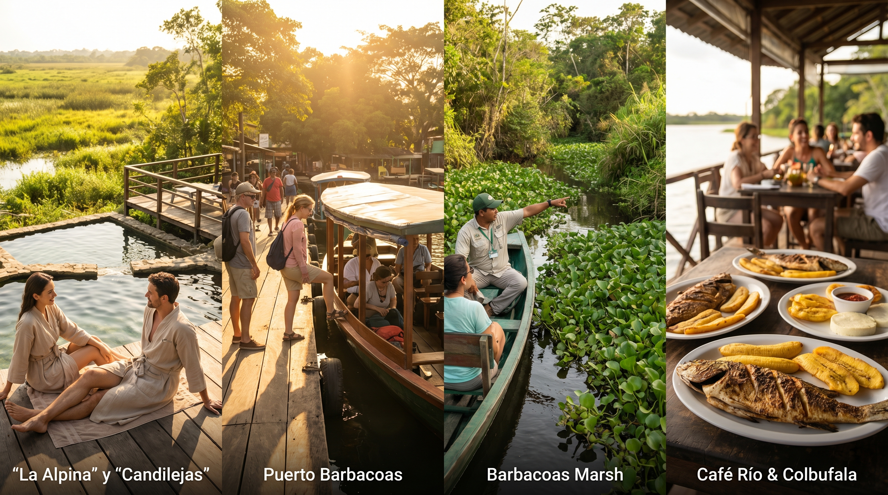

4 días / 3 noches
Ruta 2 — Balneario y Ciénaga
La Alpina o Candilejas, embarque en puerto de lanchas, Ciénaga de Barbacoas con Biochicoas o Descúbrelo Tours; Café Río y Colbufala.
Secuencia de puntos: Medellín → Apartahotel San Diego → La Alpina Centro Turístico → Hotel Campestre Candilejas → Puerto de lanchas → Ciénaga de Barbacoas → Biochicoas / Descúbrelo → Café Río → Colbufala → Medellín.